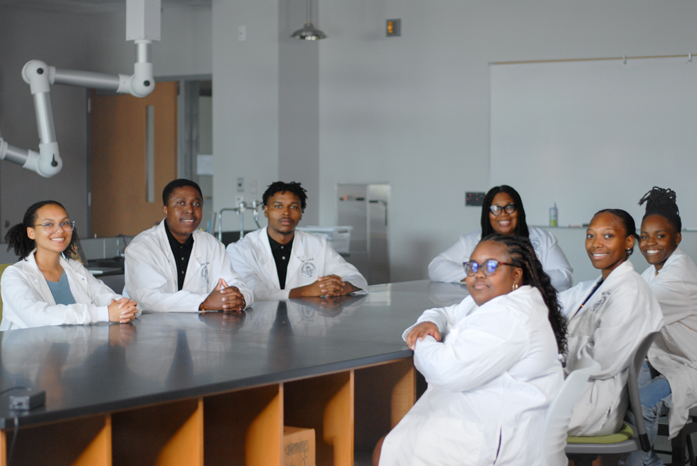

M-PURE
Minority – Polymer Undergraduate Research Experiences (M-PURE) Program

The program is partially supported by two NSF grants, the
Research Initiation Award (#2101209) and the HBCU-UP: Target Infusion Program (#1818708), was created in the Department
of Natural and Behavioral Sciences (NBS) which is housed in the College of STEM at Johnson C Smith University in Charlotte,
North Carolina to provide students with research opportunities and experiences. This program was designed to:
Students researchers in the M-PURE program have the opportunity to conduct research under the guidance of Dr. Tracy Brown-Fox,
for which they learn how to conduct literature reviews, design research experiments, record and analyze experimental data, write
reports, and present their data to technical audiences. Moreover, student researchers in the program are trained to operate on
high-tech, modern-day instrumentation in the Thermal Analysis Instrumentation (TAI) suite, which houses the rheometer,
differential scanning calorimeter (DSC), thermogravimetric analyzer (TGA), and thermomechanical analyzer (TMA). This
instrumentation is popular for characterizing the physical, mechanical, chemical, and flow properties of polymeric,
composite, and nanocomposite materials.
To date, student researchers from the M-PURE program have traveled to the American Chemical Society (ACS) conference in San
Francisco, CA, and the National Organization Black Chemists and Chemical Engineer conference in New Orleans, LA. They have
also traveled to the Oak Ridge National Laboratory (ORNL) in Oak Ridge, TN.